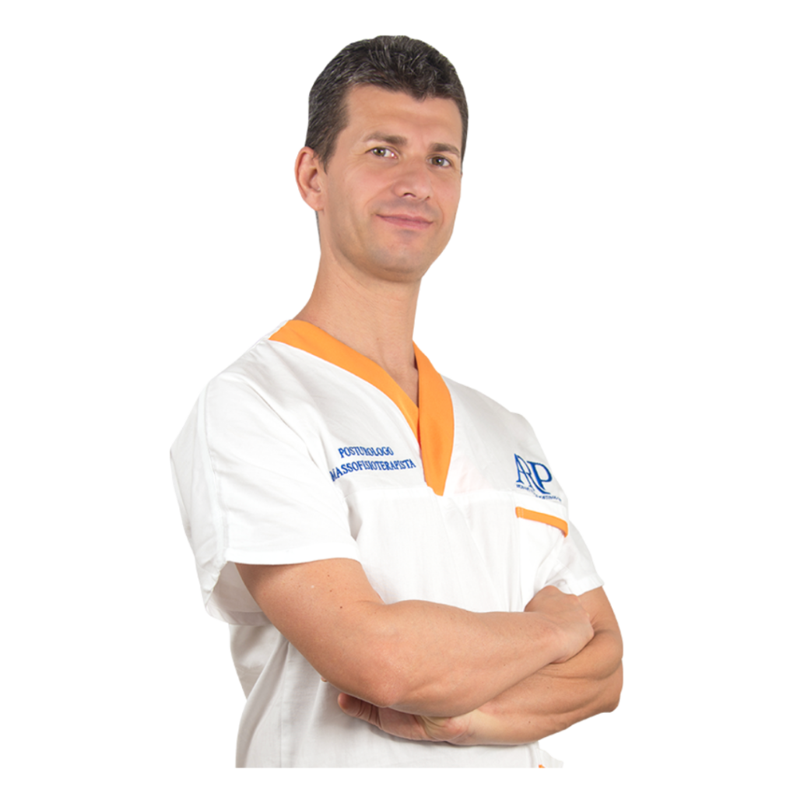

A
Accoglienza
Il primo contatto. Capiamo chi sei, da dove vieni e che obiettivi hai. Senza fretta, senza giudizio.
Schienafit applica il metodo A.A.P.E.C. — un percorso personalizzato di valutazione, allenamento e check-up, con tecnologie diagnostiche 3D che misurano i tuoi progressi.

Quando si lavora con un metodo strutturato, i risultati si misurano. Il prossimo paragrafo è il nostro.
Non c'è un protocollo che vada bene per tutti. C'è un percorso che funziona se è costruito su di te, misurato, e seguito nel tempo.
Il primo contatto. Capiamo chi sei, da dove vieni e che obiettivi hai. Senza fretta, senza giudizio.
Raccogliamo la tua storia clinica e funzionale, integrando aspetti fisici ed emotivi. Il dolore non è mai solo meccanico.
Disegniamo il tuo percorso su misura usando valutazione 3D, pedana di forza e goniometro digitale. Niente protocolli pre-confezionati.
Training individuale o in piccoli gruppi, esercizi mirati, postura applicata alla vita di ogni giorno.
Misuriamo nel tempo. Rivalutiamo con gli stessi strumenti per oggettivare i tuoi progressi.
Una sessione di analisi approfondita: postura, distribuzione del carico, ampiezza dei movimenti. I dati che ci dicono cosa sta succedendo davvero.
Sessioni one-to-one o in piccoli gruppi. Esercizi costruiti su quello che è emerso in valutazione, niente schede fotocopia.
Rivalutiamo periodicamente con gli stessi strumenti. I tuoi progressi non sono un'opinione: si vedono nei numeri.
Misuriamo invece di stimare. I tuoi progressi si vedono nei dati.

Un'analisi tridimensionale che mappa la postura nello spazio, senza esposizione a radiazioni. Una fotografia oggettiva di dove sei oggi.

Analizza come distribuisci il peso e come oscilli da fermo. La base meccanica di come ti stai reggendo nel mondo, in numeri.

Quantifica l'ampiezza articolare in gradi precisi. Dove si muove la tua schiena oggi, e di quanto si muoverà tra dodici settimane.
Lavoro con la posturologia dal 2019. Ho costruito Schienafit perché credo che il mal di schiena meriti più di un trattamento generico: merita misurazioni, ascolto, e un piano costruito sulla persona reale che ho davanti.
Ogni schiena ha una storia diversa. Il mio lavoro è ascoltarla, leggerla con strumenti che la oggettivano, e accompagnare le persone nel percorso che le riporta al movimento senza dolore.
Di clinica continuativa
Approccio integrato fisico ed emotivo
Strumenti diagnostici di precisione
Per anni avevo cercato risposte da fisioterapisti diversi. Con Riccardo ho capito che il mio dolore aveva una causa precisa — e che si poteva misurare. In tre mesi ho ripreso a dormire.

Dipende dall'obiettivo e dal punto di partenza. La maggior parte dei percorsi ha una durata indicativa tra 8 e 16 settimane, con frequenza di una o due sessioni a settimana. Il check-up di rivalutazione viene fissato in base ai progressi, di solito ogni 6–12 settimane.
Sì, ed è proprio uno dei casi più frequenti che trattiamo. Il punto non è solo l'ernia in sé, ma come tutto il sistema posturale si è organizzato attorno ad essa. La valutazione iniziale ci permette di capire come muoverci in sicurezza.
Se ne hai, sì — anche vecchi (risonanze, radiografie, referti specialistici). Ci aiutano a costruire un quadro più completo. Se non ne hai, non è un problema: la valutazione bio-funzionale dà comunque dati oggettivi su cui lavorare.
Una parte del programma è pensata proprio per il lavoro autonomo tra una sessione e l'altra: esercizi mirati, semplici da memorizzare, con indicazioni precise. La continuità è ciò che fa la differenza nei risultati.
Una riduzione percepita della sintomatologia avviene spesso entro le prime 4–6 settimane di lavoro consistente. I cambiamenti strutturali misurabili con software 3D e pedana di forza si consolidano nel medio periodo (12+ settimane).
Né l'uno né l'altro nel senso classico. È uno studio specializzato in posturologia che integra valutazione strumentale e training applicato. Si lavora su appuntamento, in spazi dedicati, con un solo paziente o piccoli gruppi.